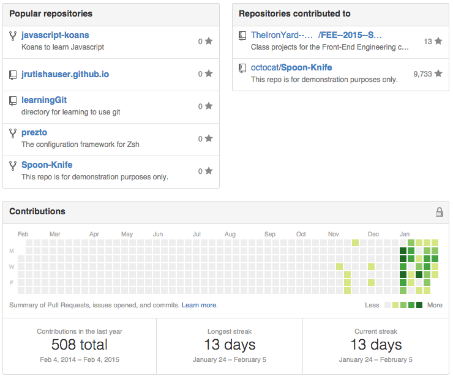

Jon Rutishauser
jrutishauser
Orlando, FL
jrutishauser@gmail.com
Joined on Nov 11, 2014
4 1 6Followers
Starred
Following
Organizations

Contributions
Repositories
Public Activity

TIY-Assignments
updated too recently
TIY-Assignments
updated too recently
TIY-Assignments
updated too recently
TIY-Assignments
updated too recently
- oh look an activity had been added
- seems like you were expecting something
- perhaps a little bit more interesting here
- I might come back and fix this, but outlook not good